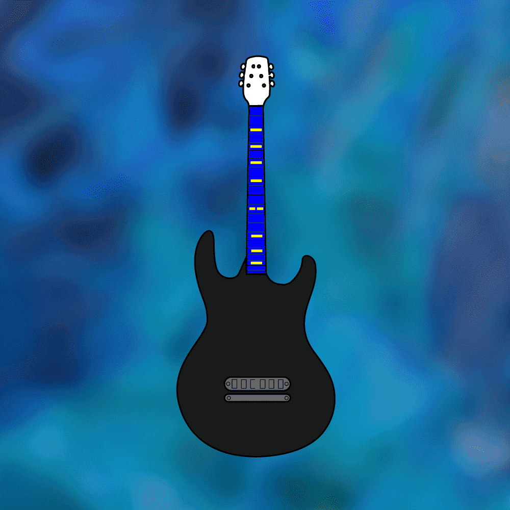
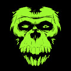
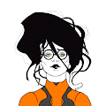
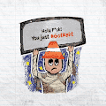
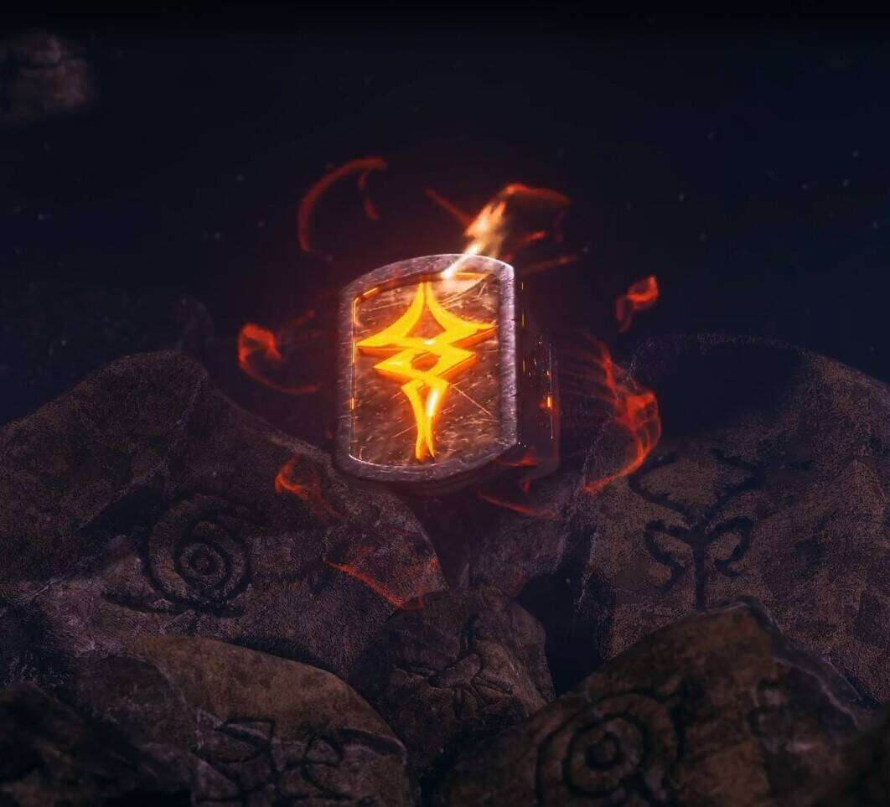
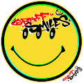
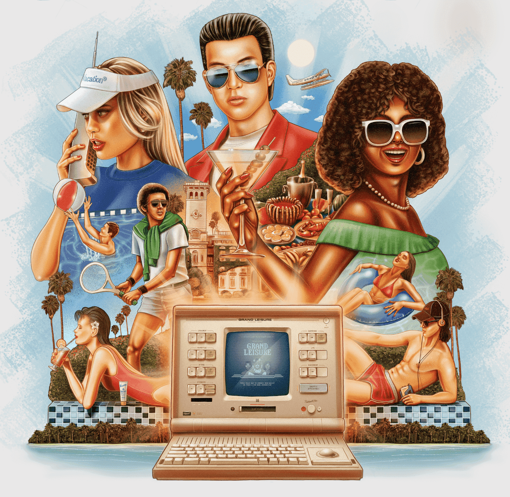

GohpeL ▶ 什么是 GohpeL？ GohpeL是一个 NFT（不可替代令牌）集合。存储在区块链上的数字艺术品集合。 ▶ GohpeL 代币有多少？ 共有 113 个 GohpeL NFT 。目前 113 位所
Gold Hunt Game Goldminers 和 Pirates 在 Metaverse 中争夺金银岛的 GGOLD。诚实地通过挖掘 GGOLD 来发财，或者与野蛮海盗合作，获得你真正应得的宝藏。 “GGOLD”是一种实用代币。它仅在 Gold
Golden Shiny Boot - Son Heung-Min 🔥🔥🔥Mint 赢得 MAYC、Adidas NFT 和 Son Heung-min 球衣！🔥🔥🔥 Golden Shiny Boot - Son Heung-Min，是一个 FREE-MINT 系列，限量 777 件，以庆祝 Son Heung-Min 在 2021-2022 赛季英超联赛
Golden Token Crypto New Yorkers ▶ 什么是 Golden Token Crypto New Yorkers？ Golden Token Crypto New Yorkers 是一个 NFT（非同质代币）集合。存储在区块链上的数字艺术品集合。 ▶ 有多少 Golden Token Crypto New Yorkers 代币？ 总共有 840 个
Golden Token Incomplete Control 一枚金币 | 不完全控制 (GTIC) NFT 为您提供铸造不完全控制 NFT 艺术品的权利。在 2021 年 12 月 9 日至 12 月 12 日的铸币活动期间，您只能铸币一次，并且必须亲自到纽约州纽
Golden Token Option Incomplete Control 如果您收到 Golden Token Option | 不完全控制（GTOIC）NFT，那么你有一个 15 ETH 的选项来申领一个 Golden Token | 到 2021 年 11 月 19 日，不完全控制 (GTIC) NFT。 与 Bright Moments Gallery 合作，T
Golden Token | Reflections 一枚金币 | Reflections (GTRF) NFT 为您提供了铸造生成性 Reflections NFT 艺术作品的权利。在 2021 年 11 月 18 日的铸币活动期间，您只能铸币一次，并且必须亲自到纽约州纽约的 Bright Moments 画廊 (I
GoldSilverPirates 哎哟！Gold Silver Pirates 是由真实的实物金银条支持的艺术作品集合！稀有收藏艺术品、区块链实用程序和已有数千年历史的传统资产的完美结合。经验丰富的船员
GolemZ Genesis GolemZ由IsmToys和 Ricky 创立，是第一个将每个 NFT 链接到自己的物理 1:1 变体的 PFP 项目，将元界和物理世界合并。 每个 PFP 都将与一个手绘和 3D 打印的
Good Guys NFT 这是生活在洛斯拉托斯的 10,000 名好人的故事 - 曾经是一个充满活力的艺术社区，现在最好被描述为永无止境的宿醉。当 BODEGA “Art & Comics” 几年前关闭时
Good Minds NFT Good Minds 是一个独立的、以艺术为中心的 NFT 合集，拥有多个角色。以太坊区块链上共有 6000 个随机生成和精心策划的输出。 我们的稀有度排名可以在PopRank上
 Goodman Guitars 来自 ChrisMKTG 的 10,000 个 1-of-1 NFT 吉他艺术的集合。 我是一名音乐家，已经出版了一张 LP 和一张专辑，另一张专辑即将发行。从写作、录音到出版音乐，我什么都做。我以前有
Gooniez Gang Official Gooniez Gang 是第一个使用 Web 3 技术将赛车和射击结合到一个生态系统中的迷人体验。Gooniez Gang 品牌是我们社区的核心产品，是一个独特的生态系统，为现实世
 Gorilla Nemesis Gorilla Nemesis 是以太坊区块链上 5000 个独特的 ERC-721 NFT 的集合。 每只 Gorilla 也是您加入 Bunker 2171 会员的通行证，享有中长期会员专属福利。 Bunker 2171 的 6 个系列中的第 2 个 Bunker2171Labs 展示了一系列六
 Gothic Girls Club 1500 PFP 哥特式女孩。 ▶ 什么是 Gothic Girls Club？ Gothic Girls Club 是一个 NFT（不可替代代币）系列。存储在区块链上的数字艺术品集合。 ▶ 有多少 Gothic Girls Club 代币？ 总共有 1500 个
 GotRekt? 1111 个通过 jpeg 获得 REKT 的 degens ▶ 什么是 GotRekt？ 有事吗？是一个 NFT（不可替代代币）集合。存储在区块链上的数字艺术品集合。 ▶ 有多少 GotRekt
 Gotterhavn - Circle of Aristocrats 随着齐尔根抵达哥特港，大裂隙的一道屏障被攻破。 腐朽已经开始在仙界蔓延。 空气中弥漫着紧张的气氛。 为了武装他们的人民，众神和女神下令将一些遗物送
GRAAPH x Jeremy Koreski - Lifeblood 介绍 Lifeblood，Jeremy Koreski 的第一个混合媒体产品，以及他在 GRAAPH 上的第一个 NFT 版本。 Lifeblood 是加拿大著名摄影师 Jeremy Koreski 的限量版 NFT + 打印系列。杰里米
 Graff Smiles 让你微笑的涂鸦 ▶ 什么是 Graff Smiles？ Graff Smiles 是一个 NFT（非同质代币）集合。存储在区块链上的数字艺术品集合。 ▶ Graff Smiles 代币有多少？ 总共有 10 个 Graff Smiles N
 Grand Leisure 欢迎来到 Grand Leisure 的 Bespoke Leisurist 系列。Poolsuite Internet Leisure Corporation 的独家 NFT 产品，一万名独特的 Leisurists 中的每一位都有自己的故事要讲述。从手工吹制玛格丽塔酒杯的进口商到
Grandpa Goblinz FREE Mint ▶ 什么是Grandpa Goblinz FREE Mint？ Grandpa Goblinz FREE Mint 是一个 NFT（非同质代币）集合。存储在区块链上的数字艺术品集合。 ▶ Grandpa Goblinz FREE Mint代币有多少？ 总共
GrandPianists Grand Pianists 囊括了每位艺术家独特的不同能力和音乐影响力。这 10,000 件独特的数字收藏品没有明确的性别，没有明确的种族，所有人都可以自由地找到代表。每个独奏音
GRAVEL Gravel 是以太坊区块链上 2500 NFTS 的集合。每个 NFT 是 0.03 ETH。您一次最多可以铸币 30 枚。 ▶ 什么是砾石？ GRAVEL 是一个 NFT（不可替代代币）集合。存储在区块链上的数
Graviless NFT Graviless NFT 是一个社区驱动的收藏品项目，由 5500 个创世纪组成。Gravis 是糖果和含糖食物的贪吃者。他们疯狂地喜欢生活在充满明亮闪亮色彩的星球上。这也是
Gray Boys: Science Lab 神秘材料离开了灰男孩科学实验室。他们的目的是什么？还有哪些其他材料离开了他们高度安全的保险库？ Gray Boys 是 10,000 个生成 NFT 的集合，它们是 The Mothership DAO 的成员。 伟
Great Ape Bananas 大猿协会-香蕉武器 强大社区的强大武器！猿强。猿联合。 由于 United ApeWarSpec 的实验，Great Ape Society 于 1968 年成立。随着时间的推移，猿类开始认识到人类对它们造成的
Great Ape Society 由于 United ApeWarSpec 的实验，Great Ape Society 于 1968 年成立。随着时间的推移，猿类开始认识到人类对它们造成的伤害。在一场史诗般的运动中，猿族长带领猿族走向自由。
Great Genesis Gorillas 由于 United ApeWarSpec 的实验，Great Ape Society 于 1968 年成立。随着时间的推移，猿类开始认识到人类对它们造成的伤害。在一场史诗般的运动中，猿族长带领猿族走向自由。
Great Meekicks Official Meebits 得到了最甜蜜的结果。有 80 多双不同的 Meebits 鞋，包括类型、颜色和尺码。每对 Meekicks 都与 20,000 个 Meebits 中的一个唯一关联，并具有自己的随机跳跃、速度和舞蹈级别。拥有
Great Omega Speedmaster Official 欢迎来到 1inAmeelionwatch！唯一一个您可以找到独特的、独一无二的手表艺术的 NFT 项目，让您有机会通过赢得稀有的奢华瑞士手表进入手表
Greedy Gramps by Gramps.io 我们未来通过 Web3 自我打磨。流行文化艺术品符合现实生活的适用性。Gramps.io 搭建了从 Web3 到现实世界的桥梁。 ▶ Gramps.io 的 Greedy Gramps 是什么？ Gramps.io 的 Greedy Gramps 是一个 N
Green Meekicks Official Meebits 得到了最甜蜜的结果。有 80 多双不同的 Meebits 鞋，包括类型、颜色和尺码。每对 Meekicks 都与 20,000 个 Meebits 中的一个唯一关联，并具有自己的随机跳跃、速度和舞蹈级别。拥有
Gridcraft Genesis Identities Gridcraft Network 是一个全新的 Play & Earn 游戏元宇宙平台，适用于 PC、Xbox、PlayStation、Nintendo Switch 和移动设备。我们的使命是利用我们在游戏
GRILLZ GANG GRILLZ GANG 是 5,555 个独特的 GRILLZ NFT 的集合，它们在以太坊区块链上闪耀。除了照亮房间之外，您的 GRILLZ 还将授予您 GRILLZ GANG 的会员资格。每个 Grillz 都是社区的钥匙。 每个 GRILLZ 都是从1
Grim Tales of a Wassie “Wassie 的恐怖故事”包含 111 幅独特的抽象艺术作品和 111 首诗歌。诗歌和艺术作品的独特组合由 Crypto Twitter 上著名的 smol wassie [研磨诗人] 精心策划。 Poet.txt 是一项将诗
grimbogs by bedbugs “臭虫”是一个建立在和平地融入社会的基础上，同时以积极的态度将它们带入公众意识的组织。臭虫已经为那些相信 grimbogs 提供的无限可能性的人们部署了 10,000 个会
Grinder Mfers 6,969 名 Grinder Mfer 生活在以太坊区块链上。一群讨厌磨砺和构建全新方式的mfer。来自很棒的#sartoshi 的衍生项目 ▶ 什么是研磨机 Mfers？ Grinder Mfers 是一
Grizzly Bear Club (GBC) Grizzly Bear 是 10,000 个独特 NFT 的集合，在 Polygon 区块链上的 ERC-721 标准中随机生成了 +250k 可能的组合。 ▶ 什么是灰熊俱乐部 (GBC)？ 灰熊俱乐部 (GBC) 是一个 NFT（不可替代代币）
GroovyMonsters ▶ 什么是 GroovyMonsters？ GroovyMonsters 是一个 NFT（非同质代币）集合。存储在区块链上的数字艺术品集合。 ▶ 有多少 GroovyMonsters 代币？ 总共有 5,555 个 GroovyMonsters NFT。
Grumpii Monsters Grumpii 原始怪物。 ▶ 什么是 Grumpii 怪兽？ Grumpii Monsters 是一个 NFT（非同质代币）系列。存储在区块链上的数字艺术品集合。 ▶ 有多少 Grumpii Monsters 代币？ 总共有 9 个 Grumpii Monsters NFT。目前
GrumpyPandaz GrumpyPandaz NFT 和PandaCubz NFT是存储在以太坊区块链上的独特 3D 集合🐼欢迎来到 Uppeee 生态系统🪙 ▶ 什么是 GrumpyPandaz？ GrumpyPandaz 是一个 NFT（非同
gruubub ▶ 什么是 gruubub？ gruubub 是一个 NFT（不可替代令牌）集合。存储在区块链上的数字艺术品集合。 ▶ 存在多少个 gruubub 代币？ 总共有 2,222 个 gruubub NFT。目前，1
gtburgers.wtf ▶ 什么是 gtburgers.wtf？ gtburgers.wtf 是一个 NFT（不可替代代币）集合。存储在区块链上的数字艺术品集合。 ▶ 有多少个 gtburgers.wtf 代币？ 总共有 9,999 个 gtburgers.wtf NFT


 NFT 为您提供铸造不完全控制 NFT 艺术品的权利")

 NFT 为您提供了铸造生成性 Reflections NFT 艺术作品的权利。")